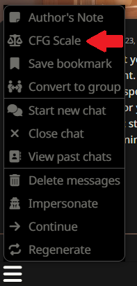
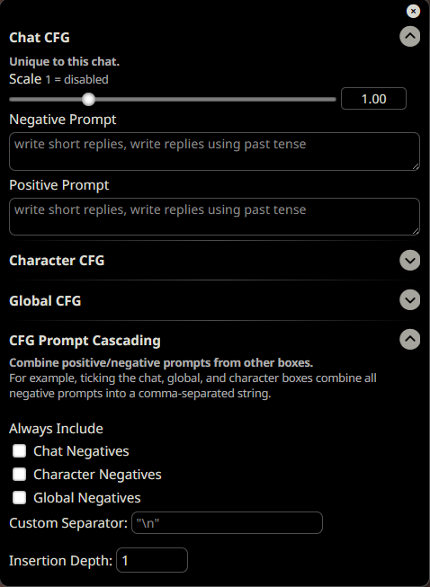
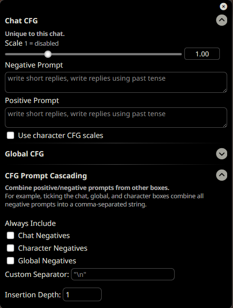
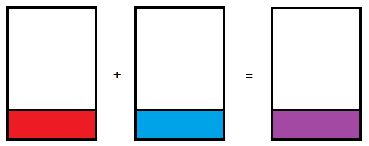

CFG
页面作者：kingbri
贡献者：kingbri、Guillaume "Vermeille" Sanchez、AliCat
这是什么？
CFG（classifier-free guidance，无分类器引导）是一种让提示词的某些部分变得更突出或更不突出的方法。
支持的后端 API
目前支持的后端包括 oobabooga 的 textgen WebUI、NovelAI 和 TabbyAPI。 NovelAI 有其自己的 CFG 文档。
警告：由于 CFG 需要处理多个提示词，会增加显存使用量！如果在使用 CFG 生成提示词时 GPU 内存不足，请考虑减小上下文大小、使用参数量更小的模型，或完全关闭 CFG。
配置
访问 CFG 设置的方式与访问 Author's Note 相同：

CFG 面板如下所示：

CFG 面板中有四个下拉菜单：
-
聊天 CFG
- 将 CFG 比例和提示词的作用范围限定在当前聊天
-
角色 CFG
- 将 CFG 比例和提示词的作用范围限定在指定角色
-
全局 CFG
- 全局覆盖 CFG 比例和提示词（同时也会覆盖模型预设！）
-
CFG 高级设置（原名 CFG 提示词级联）
- 用于合并前三个下拉菜单的提示词，并设置插入深度。
注意：如果引导比例设置为 1，由于此时 CFG 处于「关闭」状态，不会发送任何内容。
群聊
在群聊中，CFG 比例面板如下所示：

主要变化是移除了角色 CFG，并在聊天 CFG 下拉菜单中新增了一个名为「Use Character CFG Scales」的复选框。勾选后，将使用当前角色的引导比例，而不是聊天 CFG 比例的设定值。
此功能的主要用途是根据每个角色的各自需求来调整比例。
此外，在提示词级联中勾选「Character Negatives」框，将在聊天负面提示词的基础上（如已启用）额外附加各角色独立的负面提示词。
概念
这不是 Stable Diffusion 里的东西吗？
是也不是。LLM 中 CFG 的工作方式与 Stable Diffusion 中不同。基于 LLM 的 CFG 基于「提示词混合」原理运作：CFG 公式接受一个正面提示词和一个负面提示词，然后混合两者之间的差异，最终发送合并后的提示词并生成响应。
下图有助于理解这一概念：红色表示负面提示词，蓝色表示中性提示词，紫色表示被解读的混合结果。三个提示词中相同的白色空间不参与 CFG 混合。

如果想深入了解 CFG 与 LLM，Vermifuge 的原始论文在这里，推荐阅读/收听：
我需要 CFG 提示词吗？
不需要！CFG 提示词完全是可选的。仅仅将引导比例调整到 1 以上，就能对回复产生影响，从而凸显聊天内容和角色互动特色。
什么是好的 CFG 提示词？
既然 CFG 提示词与 Stable Diffusion 的负面标签和嵌入不同，我们该如何创建提示词呢？
警告：以下内容假定你已使用 PLists 和 Ali:Chat 格式创建了角色。如果没有，可以自由尝试各种提示词技巧。
假设有一个叫「John」的角色，根据他的示例对话，他应该时刻感到快乐和兴奋。然而在实际聊天中，他有时会显得悲伤和沮丧。
这时 CFG 就派上用场了！只需将负面提示词设为 [John's feelings: sad, depressed] 来压制悲伤的部分，还可以选择将正面提示词设为 [John's feelings: happy, joyful] 来进一步凸显 John 快乐的一面。
正面提示词
上文已有涉及，此处再补充说明。正面提示词用于进一步凸显角色的某些特质。还以 John 为例：通过正面提示词 [John's feelings: happy, joyful] 让他更快乐，John 输出的对话应该比不使用正面提示词时更具快乐感。
但是……
以上只是基于特定角色格式经验总结的宽泛指导原则，制作提示词的方式远不止于此，欢迎自行探索实验。也欢迎与其他用户分享你的心得！
引导比例
一个经验法则：引导比例为 1 时，CFG 被禁用——SillyTavern 实际上不会向后端发送任何内容。引导比例 >1 时，将在不同程度上产生上述各节所示的效果。
然而，引导比例 <1 时，效果会反转，因为此时负面提示词成为主导。
再以 John 为例：负面提示词为 [John's feelings: sad, depressed]，正面提示词为 [John's feelings: happy, joyful]，引导比例设为 0.8。
这将反而更多地凸显负面提示词，John 会开始表现得比平时更悲伤，而不是更快乐。
简而言之：从引导比例 1.5 开始，再根据输出结果上下调整。
提示词级联
负面和正面提示词可以在不同 CFG 类型（按聊天、按角色和全局覆盖）之间进行级联。详情请参见「配置」一节。
插入深度
基本原则：在提示词中位置越靠下，对回复的影响越大。对于聊天而言，建议使用默认深度 1，这与 SillyTavern 的其他组件有很好的兼容性。
如果想要实验，可以尝试插入深度 0，但这可能会显著改变回复的面貌，不建议在此深度下使用提示词级联！